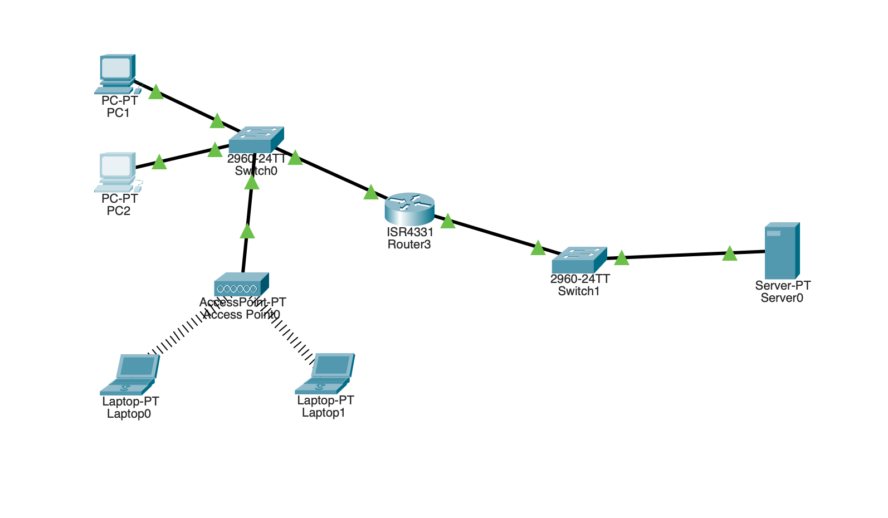

Segmentation LAN et contrôle d'accès par ACL (Cisco Packet Tracer)
Objectif du Projet
L'objectif de ce projet est de concevoir et sécuriser un réseau local (LAN) en utilisant des équipements Cisco, puis de mettre en place une politique de contrôle d’accès à l’aide d’ACL étendues afin de restreindre la communication entre certains hôtes.
Ce projet démontre des compétences en :
- Réseaux (LAN, routage, adressage IP)
- Cybersécurité (contrôle d’accès, filtrage réseau)
- Configuration Cisco en CLI
- Compréhension du trafic réseau (ICMP, TCP/IP)
- Méthodologie réseau et sécurité
Conception de la topologie réseau
J'ai commencé par concevoir une topologie réseau dans Cisco Packet Tracer comprenant :
- 1 routeur ISR4331 (CLI uniquement)
- 2 switch 2960-24TT
- 2 ordinateurs (PC1, PC2)
- 1 serveur
- 1 point d’accès Wi-Fi (AP)
- 2 ordinateurs portables
Configuration réseau :
- Le réseau est volontairement segmenté en deux sous-réseaux distincts afin de forcer le passage du trafic
par le routeur et permettre l’application de règles de sécurité.

Topologie complète dans Packet Tracer
Mise en place de l’adressage IP et des sous-réseaux
Deux sous-réseaux ont été définis :
- 192.168.1.0 /24 - Réseau utilisateurs (PC1, PC2...)
- 192.168.2.0 /24 - Réseau serveur
Exemple d’adressage :
- PC2 : 192.168.1.20 /24 – Passerelle : 192.168.1.1
- Serveur : 192.168.2.10 /24 – Passerelle : 192.168.2.1
Cette segmentation permet de contrôler précisément les flux entre utilisateurs et serveur.

Configuration IP PC1

Configuration IP PC2

Configuration IP SERVEUR
Tests de connectivité avant sécurisation
Avant de mettre en place l'ACL (Access-List), j'ai vérifié la connectivité :
- PC2 → Serveur : ping réussi
- PC1 → Serveur : ping réussi
- Tous les équipements communiquent normalement
Cela confirme que le routage est fonctionnel et que le réseau est correctement configuré.

Ping depuis le PC1 vers le serveur, réussi avant ACL

Ping depuis le PC2 vers le serveur, réussi avant ACL
Mise en place d'une ACL étendue
L'objectif de sécurité est le suivant :
Empêcher PC2 (192.168.1.20) d'accéder au serveur (192.168.2.10), tout en autorisant le reste du trafic réseau.
Pour cela, j'ai mis en place une ACL étendue sur le routeur, depuis son CLI.
Règles de l'ACL :
- Blocage total du trafic IP entre PC2 et le serveur
- Autorisation explicite de tout le reste du trafic

Configuration de l'ACL en CLI
Tests après sécurisation
Après application de l'ACL :
- PC2 → Serveur : ping échoué
- PC2 → Autres hôtes : communication autorisée
- PC1 → Serveur : accès toujours fonctionnel
Cela démontre que la politique de sécurité est ciblée, efficace et non bloquante pour le reste du réseau.

Ping bloqué depuis PC2 vers le serveur

Ping fonctionnel depuis PC2 vers PC1
Ping fonctionnel depuis PC1 vers le serveur
Conclusion et Compétences Démontrées
Ce projet illustre une approche réaliste de sécurisation réseau basée sur le contrôle des flux entre zones utilisateurs et serveurs.
Compétences Mises en Œuvre :
Ce que j'ai Appris :
- Une ACL ne filtre que le trafic qui traverse le routeur
- L'importance de la segmentation réseau pour la sécurité
- Le rôle fondamental du routage dans le contrôle d'accès
- La logique deny spécifique + permit global
- La méthodologie réseau utilisée en environnement professionnel